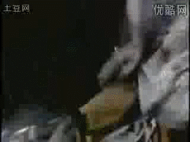
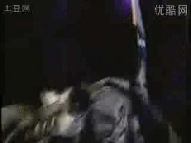
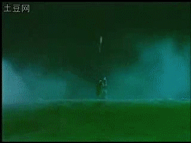
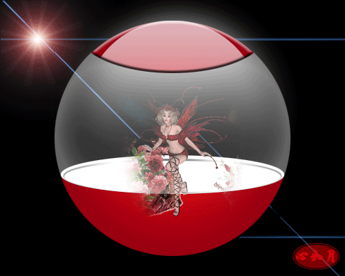

如何在iwzq论坛制作上传动态头像
#1 如何在iwzq论坛制作上传动态头像 作者：学生刀 发表时间：2009-5-16 15:34:47
点击进入下载－No1VideoConvertor_v4.145（可以制作gif）注册版破解版.rar
先下这2个软件 找视频截取片段 制作好小于500k的gif 头像限制为20k 但是附件有500k
 《--附件图
传好后 写图片地址就行了 ok
如果你能找到支持外联图片服务器 且大小无限制 那就更好了
［ 有志青年 于 2009-5-16 17:57:26 时花20金币送鲜花一朵］
#2 Re:如何在iwzq论坛制作上传动态头像 作者：刀学生 发表时间：2009-5-16 15:45:43
#3 Re:如何在iwzq论坛制作上传动态头像 作者：刀学生 发表时间：2009-5-16 15:47:10
 第二个号威望不够
第二个号威望不够
#4 Re:Re:如何在iwzq论坛制作上传动态头像 作者：刀学生 发表时间：2009-5-17 12:07:28
#5 Re:如何在iwzq论坛制作上传动态头像 作者：刀学生 发表时间：2009-5-17 12:20:27
传后右键点击图片 属性 ，获得地址 在控制面板修改 ，此地址是相对地址，控制面板里很短的是绝对地址，替换掉就行！ 地址就是URL#6 Re:Re:如何在iwzq论坛制作上传动态头像 作者：茗弈小刀 发表时间：2009-5-21 18:20:45
#7 Re:如何在iwzq论坛制作上传动态头像 作者：茗弈小刀 发表时间：2009-5-21 18:28:36
#8 Re:如何在iwzq论坛制作上传动态头像 作者：刀学生 发表时间：2009-5-21 20:18:47
走了 ，没时间来这里了，不开贴就在这里说，不管刀魂是否出现，我3年内不会下棋不会说话了。
让刀魂看看什么是说到做到！！！要骂我尽管骂吧 我不会说话的 哈哈哈哈
#9 Re:如何在iwzq论坛制作上传动态头像 作者：茗弈小刀 发表时间：2009-5-26 11:45:58
